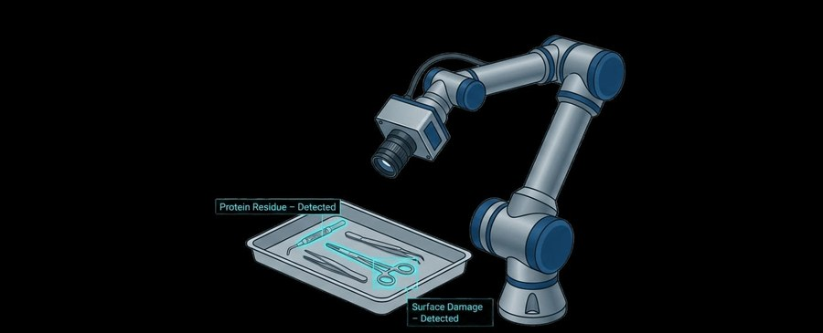

BWKI 2026 // MEDICAL COMPUTER VISION

STERILVISION
Wir kalibrieren gerade.
Unsere KI-gestützte Vision-Pipeline für die Inspektion steriler Trays wird derzeit gewartet und weiterentwickelt. In Kürze sind wir wieder online.
sterilvision@core:~/maintenance
// Bei Anliegen erreichst du uns hier